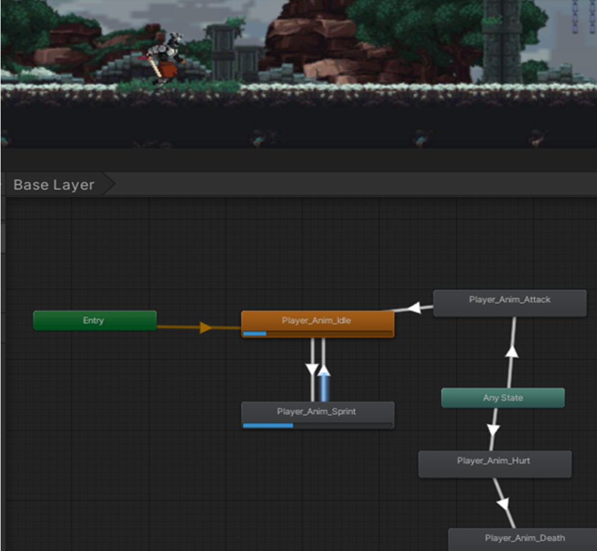

Description: A 2D top-down RPG game which was tasked to create a game using game design features taught in lectures, to create an exciting game.
Engine: "Unity Engine"
Key Features:

Description: Taking on the classic Arcade game frogger, I was tasked to add a unique spin on an classic Arcade Game, which was adding a day and night cycle to create a new spin on the classic game frogger!
Engine: "Unity Engine"
Key Features:

Description: Task was to create a game from the engine created which was the theme was frogger
Engine: Visual Studio-SDL (Simple DirectMedia Layer)
Key Features:
Description: Tasked to work together in a team of 5 or 6 to deliver an artefact using Kanban as our approach to a agile project methodology. The artefact was a 2D dark fantasy side scroller inspired by metroidvanias and the souls-like genre.
Description: My Role in this module was one of the main programmer using Unity C# to Create all Player & Enemy/Boss functionality to Movement, Attacking, Hurt, Death, Health System and User Interface.
Using Unity's Animation system to give life to the actors in the scene and Create AI for enemy's to attack and movement.
Team Written Tasks:
Team Technical Tasks:
Game Key Features:

|  |
|
|
|
|
Description: Description
Key Features:

Description: Description 6.
Key Features: